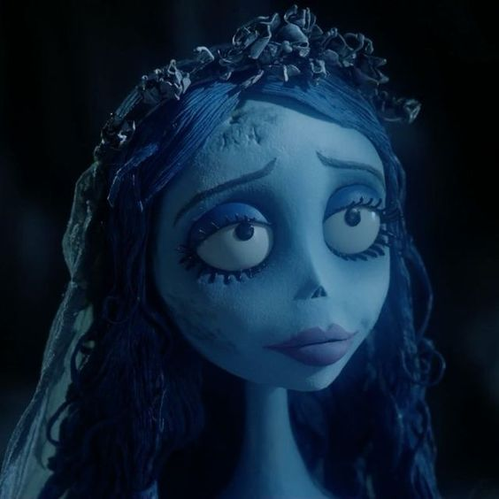
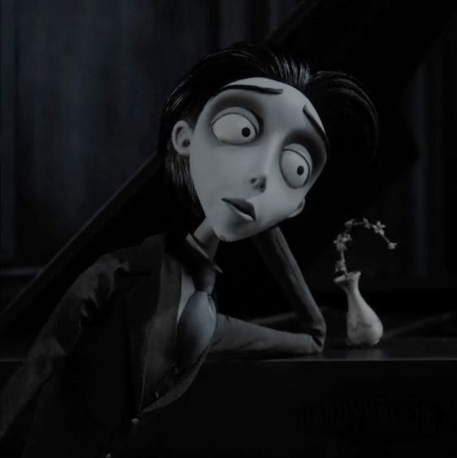
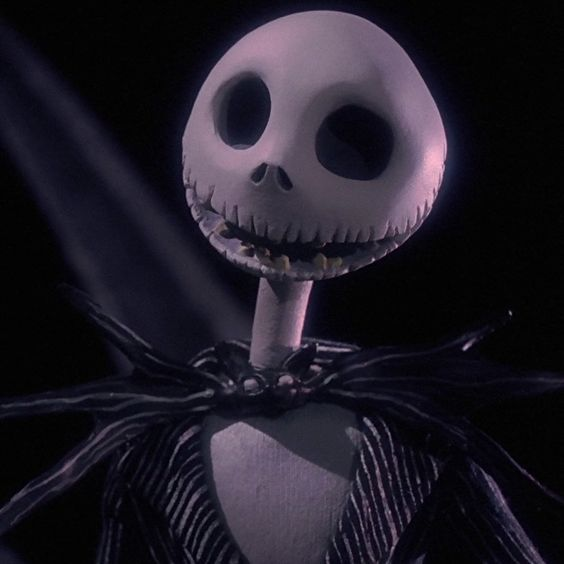

| EMILY THE CORPSE BRIDE  | Emily is considered the as the "other woman" in the movie Corpse Bride by Tim Burton. A beautiful woman who had her heart broken by the man she thought who loved her. But soon, a strange gentleman practiced his vows on a seemingly hand-looking branch just to discover it was her hand waiting to receive a ring. She follows him in the living but finds out he is already promised to someone else. At first she became sad and frustrated, but she learned true love and eventually let him go, sacrificing her life and dying twice to protect him and his beloved. | I like Emily because she is just a beauty. Her love for Victor is undefeated, she died twice, TWICE, to protect him. To me, she is the most womanly woman I know (fictionally). |
| EMMET | Emmet Brickowski (Lego Movie) is a very outgoing and positive person. When he discovers that he is the one that could save Lego City from he doesn't back down! He is very positive and caring, awesome guy! | I love how he is always sucha cool, funny, positive, kind, amazing, and caring guy. He is very silly and he even has the same swag as me B). |
| SNOOPY | Snoopy (Peanuts) his a very good natured dog, but sometimes he may act a little rude. But if we were to put his personality in a nutshell, he is helpful to his owner and may support in his decisions. Funny enough, he imagines himself to speak but in the Peanuts (the people), he is only heard as "Woof!" | I am just very fond of dogs (and cats). I love his personality and how he is still considered a good person even though Snoopy isn't always the kindest. He is just so real and so me, helpful but playful. |
| VICTOR VAN DORT  | Victor Van Dort is the lovely gentleman who accidentally proposed to Emily. He tends to stutter on his words and is very shy. In The Corpse Bride, he gets to know Emily better but later on rejects her love. He runs to the ones he likes who is Victoria. He learns that Emily also truly loved him for she sacrificed herself just to protect him. | His shyness is just very comforting. And I also like how in the end of the movie, he is grateful for Emily's love. I also like his awkwardness, really ties his character together. |
| JACK SKELLINGTON  | Jack Skellington is the ruler of Hallowee (The Nightmare before Christmas). He becomes aware that not everyone enjoyed Halloween and he also got bored of the holiday. He then stumbled across the doors of holidays, explored each one of them and decided that his favorite was Christmas. He then makes a plan that he should be incharge of christmas so he instructs some kids to kidnap Santa Claus so he could fill in for him. He also finds a love life on the way (a frankenstein girl) and gets to know her better. But the boogie man is up to now good and takes Santa Claus to end him! Meanwhile, Jack then realizes that the people don't enjoy his kind of Christmas and returns back to his place. But then he discovers that his girlfriend got kidnapped together with Sant Claus so he goes to defeat the Boogie man and he does! | Very funny and likeable guy. Nothing I could relate to him besides that I like both Halloween and Christmas, he's just a cool skeleton overall. His singing is awesome though. |